Two thirds of the planet is under cloud at any moment, so most of what an optical satellite sends back
is weather rather than ground. This is a pipeline that removes it from any Sentinel-2 tile on
Earth: a U-Net decides, pixel by pixel, whether it is looking at cloud, and a compositor keeps for
every pixel the single cleanest observation in a chosen time range. The ground is never missing. It is
only ever scattered across dates.
Nothing below is specific to a place. The tile code and the date range are arguments — Paris in
June 2025 is simply the run I have the most evidence for.
95.9%of a tile recovered
15dates, one month
4+1bands: RGB, NIR, cirrus
2 argsto point it anywhere
Tristan Giandoriggio · first project in PyTorch, first with real satellite data
The result, first
Same 110 km of ground, same month. On the left, the best single day the satellite gave.
On the right, what a month of passes adds up to.
Drag Tile 31UDQ, June 2025. The pass on the left is not a bad
one by local standards — 4% of it is usable ground. The composite on the right is 95.9% ground, and
every pixel in it was actually photographed: nothing here is generated, inferred or painted in.
That is the whole claim of this project, and the rest of the page is how it is arrived at: what decides
that a pixel is cloud, which of a month's looks at the same ground is kept, and why getting the colour
to agree across dates turned out to be harder than finding the clouds.
01
The question
Cloud removal is usually posed as inpainting. It is not. It is a selection problem.
Generative inpainting invents plausible ground under the cloud. That is the wrong tool here, and an
unnecessary one. Sentinel-2 revisits every one of its 110 × 110 km tiles — the whole
landmass of the planet — every two to three days. Over a month that is a dozen or more looks at
identical ground under different skies. Nothing needs to be hallucinated: every pixel was seen clearly
at least once. The whole task reduces to two decisions:
Is this pixel contaminated? A segmentation problem, and the part a network is good at.
Of all the clean looks at this pixel, which one do I keep? A ranking problem, and the part
physics is good at.
Both had to be wrong before the composite looked right, and a third problem I had not counted on —
radiometry — turned out to decide whether the result looks like an image or like a patchwork.
What follows is the order in which they broke.
02
Data — two sources that do not match
Labels come from 38-Cloud:
8 400 Landsat-8 patches of 384 px, each with red, green, blue, near-infrared and a hand-checked cloud mask.
Inference runs on Sentinel-2. Different satellite, different sensor, different radiometry — the domain
gap is the price of having labels at all.
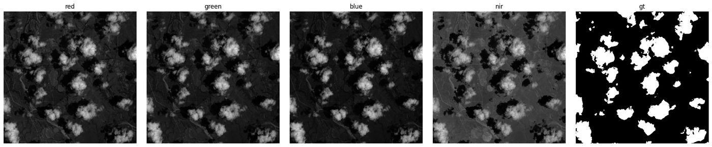
Fig. 1 One training sample. The mask is the only thing the network is asked to reproduce.
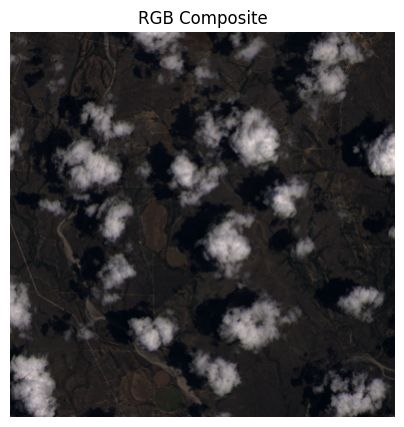
Fig. 2a RGB composite, for viewing only — the model reads the bands separately.
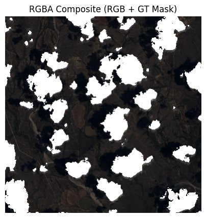
Fig. 2b The same patch with the mask applied to alpha. This is the target shape of an output.
Pulling Sentinel-2
Scenes come straight from the public S3 bucket as JPEG2000, one file per band, addressed by
military-grid tile code and date. Four bands drive the model, a fifth turns out to matter later.
Band
Sentinel-2
Resolution
Role here
Red
B04
10 m
model input · display
Green
B03
10 m
model input · display · water index
Blue
B02
10 m
model input · display · contamination score
Near-infrared
B08
10 m
model input · shadow detection
Cirrus
B10
60 m
thin-cloud veto · date ranking added late
rasterio rather than Pillow: JP2 with geospatial metadata, arbitrary band
stacks, 16-bit reflectance. Pillow understands none of that.
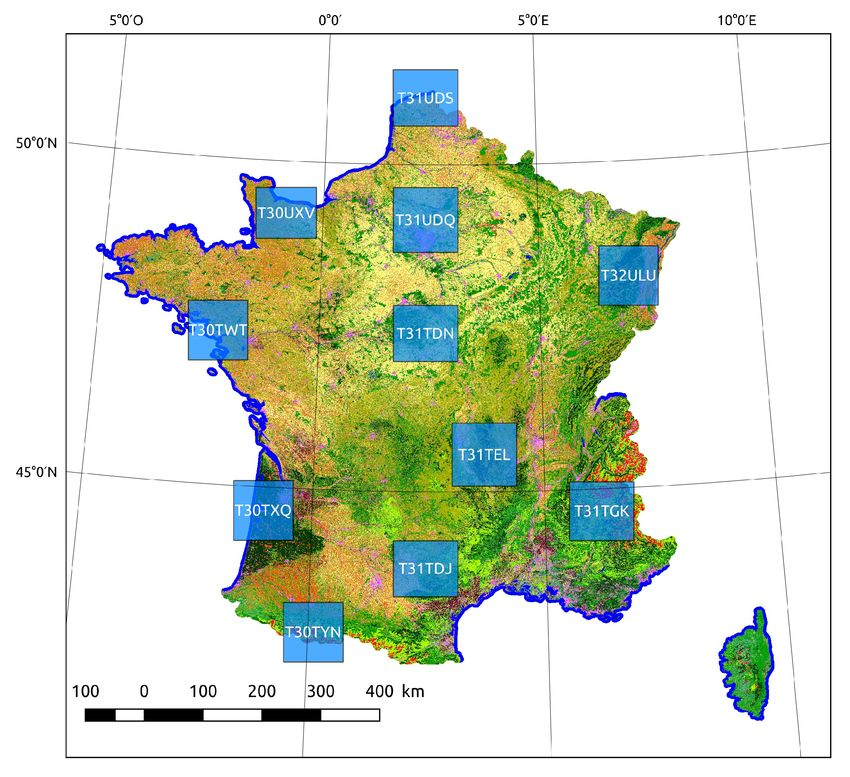
Fig. 3 The grid. Paris is 31UDQ; Lyon, Montpellier, New York and Tromsø are wired in as presets.
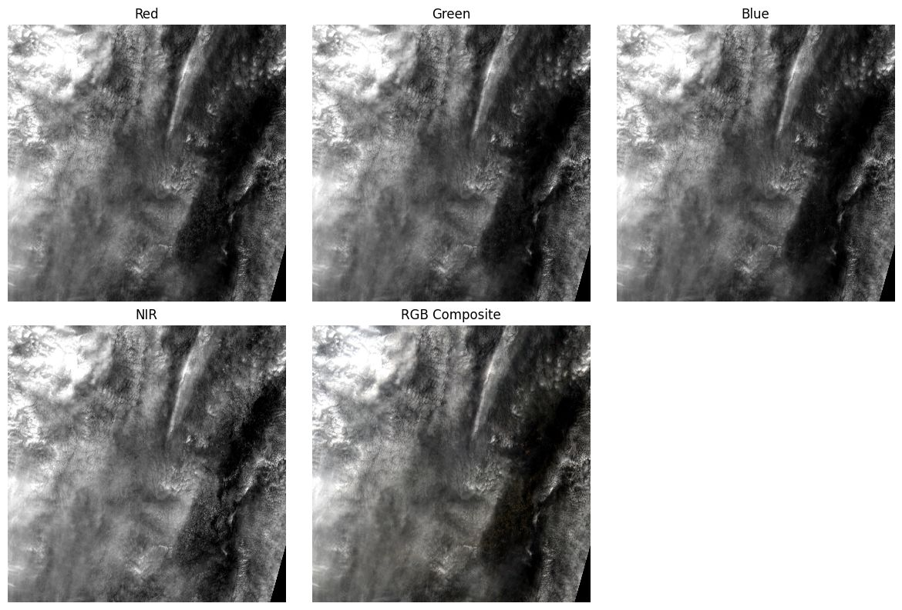
Fig. 4 One Sentinel-2 date, four bands, 10 980 × 10 980 px each.
03
Model — one architecture, four runs
Binary segmentation, so: an encoder that trades resolution for context, a decoder that trades it back,
skip connections that return the edges the pooling threw away, and BCEWithLogitsLoss on the
raw logits — a sigmoid squashing each output into a probability, then binary cross-entropy against
the hand-drawn mask. Two depths, 32→64→128 channels, dropout 0.3 in the bottleneck and in the
first decoder block. Roughly half a million parameters, trained on CPU.
The architecture barely moved across the whole project. What moved was the input and the
amount of data, over four runs. Every figure below is the same triptych: the RGB patch, the
hand-drawn mask, and what the network predicted for it.
Run
Input
Patches
Epochs
Outcome
1
RGB
100
10
cloud shape learned, edges ragged
2
RGB
4 200
9
sharper, snow still read as cloud abandoned
3
RGB + NIR
100
10
beats run 2 with 2% of its data
4
RGB + NIR
4 000
20
shipped in production
Run 1 RGB baseline
in_channels 3100 patches10 epochs384 px
The premise of the baseline was pessimistic: I assumed Sentinel-2 near-infrared would be painful to
obtain, so I trained on what an ordinary photograph gives you. Three channels, a hundred patches, ten
epochs — deliberately the smallest thing that could produce a mask at all.
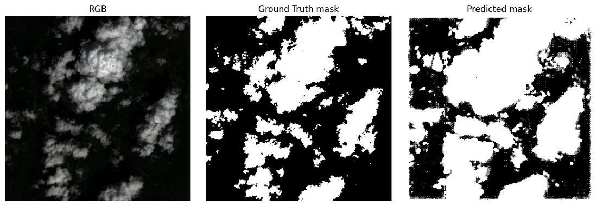
Fig. 5a Scattered cumulus. The blobs land in the right places; every boundary is ragged.
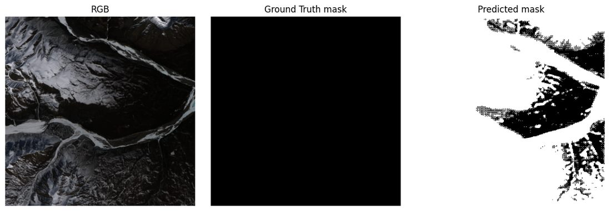
Fig. 5b A snow-covered valley. Ground truth: no cloud at all. The network disagrees, confidently.
Finding
A hundred patches are enough to learn where clouds are. They are not enough to learn
what a cloud is. In RGB, fresh snow and a cumulus tower are the same object: bright, neutral,
high-contrast against everything around them.
Run 2 RGB, 42× more data
in_channels 34 200 patches9 epochs
The obvious next move: keep the architecture, scale the dataset from 100 patches to 4 200. It
works, exactly as far as data can take it.
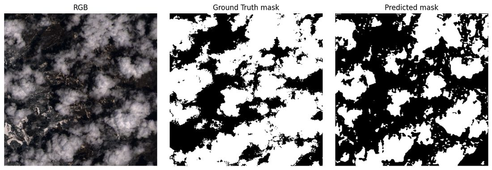
Fig. 6a Cumulus: the ragged edges are gone. That is what 42× the data buys.
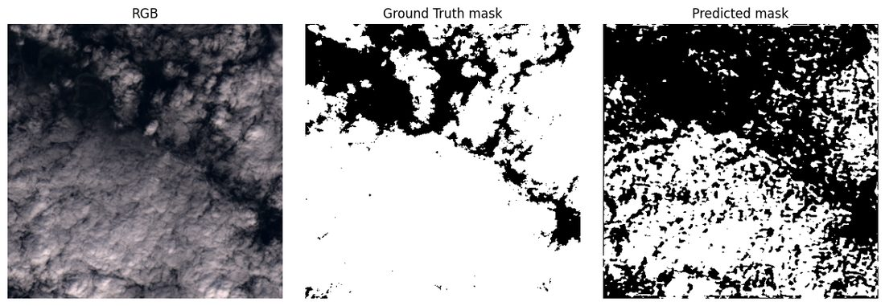
Fig. 6b Uniform overcast: the prediction breaks into speckle. No amount of RGB fixes it.
Finding
More data sharpens what the model already gets right and does nothing for what it cannot see. Snow
stays cloud; a sheet of stratus with no contrast anywhere stays undecidable. The failure is
spectral, not statistical — an argument for a fourth channel, not for a bigger dataset.
This branch was dropped for a second reason too: a bug in the training pipeline made the checkpoint
untrustworthy. And the assumption underneath it was simply wrong — Sentinel-2's NIR band is one
more file in the same S3 bucket. It cost nothing to add.
Same architecture, one extra input channel, and the dataset deliberately reset to 100 patches to
isolate the variable. Near-infrared is where cloud and snow separate: cloud stays bright at 842 nm,
snow and ice absorb.
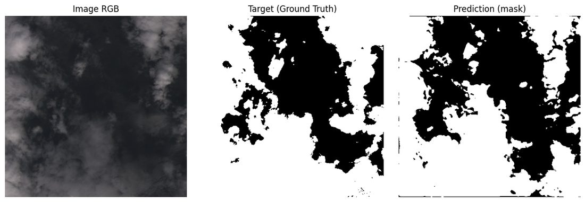
Fig. 7a The overcast case run 2 could not resolve, at 2% of its training data.
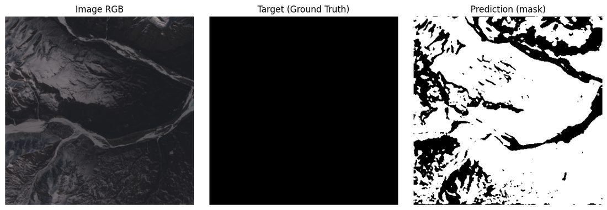
Fig. 7b Snow again: much better, not solved. The ridges still fire.
Finding
One channel beat 42× the data. Run 3 sees 100 patches and outperforms run 2's 4 200
on precisely the cases run 2 failed. When a model is blind rather than undertrained, the fix is an
instrument, not a GPU.
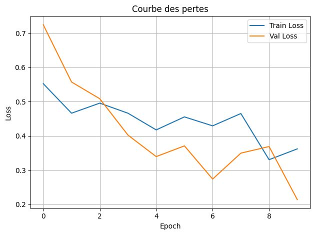
Fig. 7c 10 epochs on 100 patches. Validation still tracks training — with this little data, nowhere near overfitting.
Both changes combined. This is the checkpoint every mask and every mosaic below comes from.
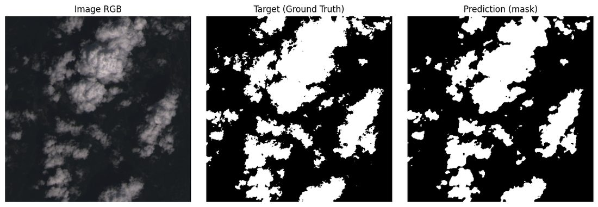
Fig. 8a Cumulus: prediction and ground truth are hard to tell apart.
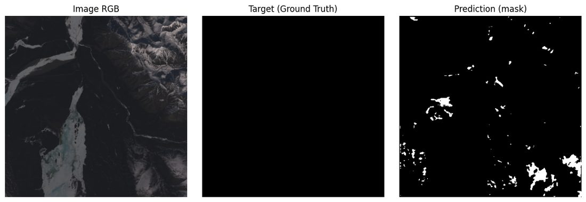
Fig. 8b The snow case, four runs later: a few specks instead of a whole valley.
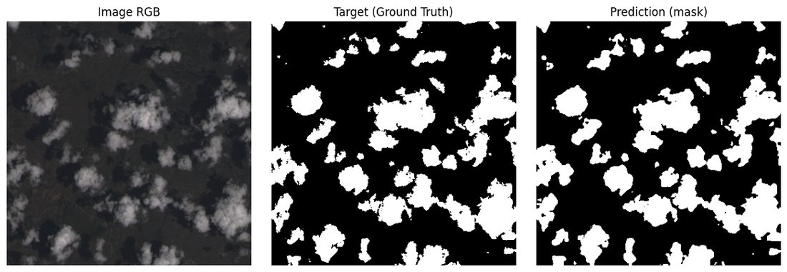
Fig. 8c Small isolated clouds, caught one by one.
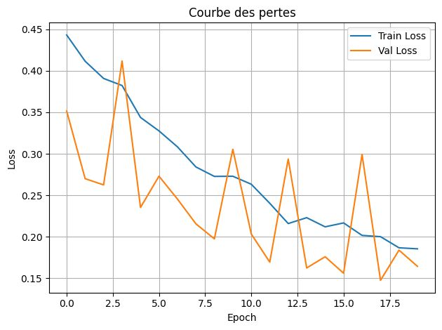
Fig. 8d 20 epochs on 4 000 patches. The curve flattens around epoch 12; the last third is noise.
Caveat
Every number here is Landsat-8 validation. The model is then asked to work on Sentinel-2, over
European cities, at 10 m instead of 30 m. Section 04 is where that bill comes due —
and no loss curve predicts it.
04
Masks — what the network actually learned
A scene is 10 980 px square; the model eats 256 px tiles. Each date is cut on a fixed grid,
predicted tile by tile, and stitched back into one probability map at full resolution. Those maps are
the most informative artefact in the project — far more than any validation metric — because the
failures are legible in them.
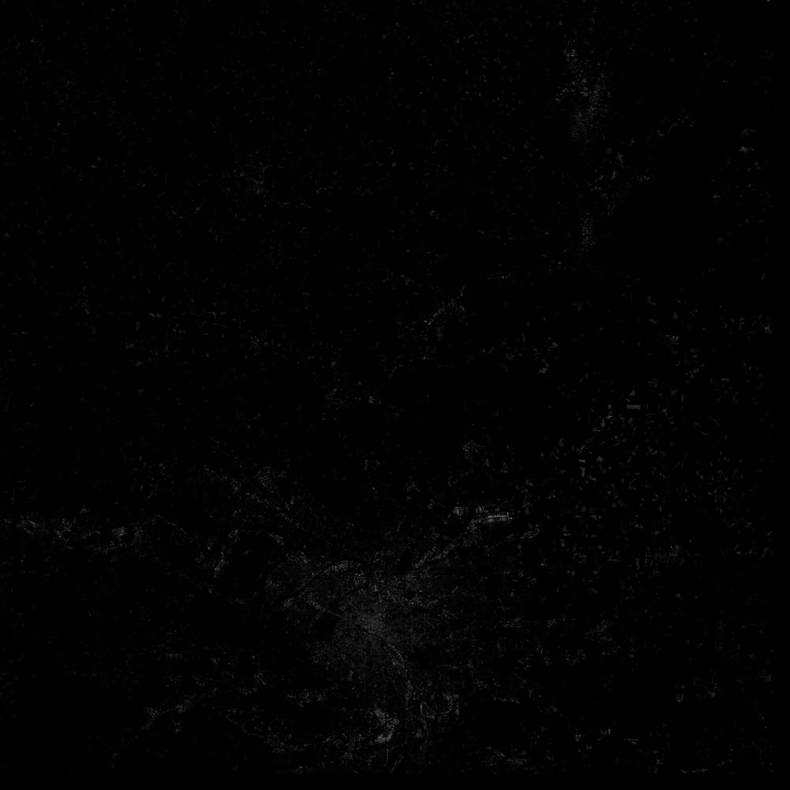
13 June 87.8% usable — the clearest day of the month.
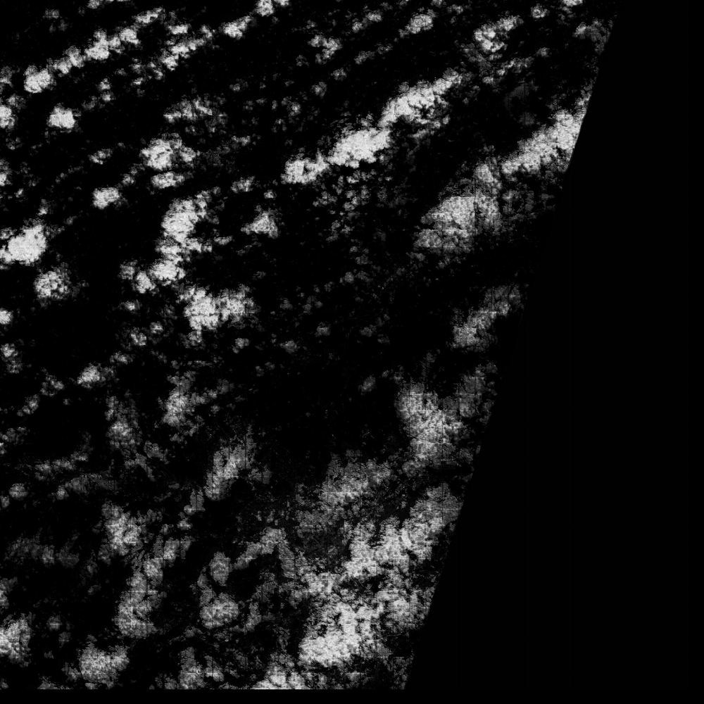
6 June 31.2% usable — broken cumulus.
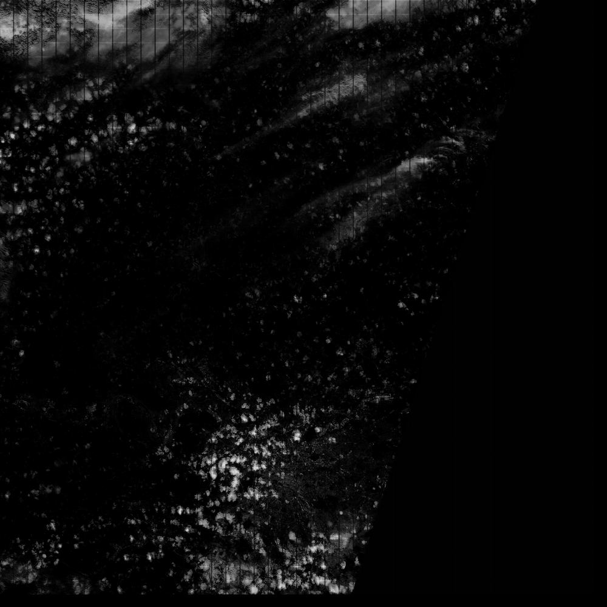
1 June 6.4% usable — the month opens badly.
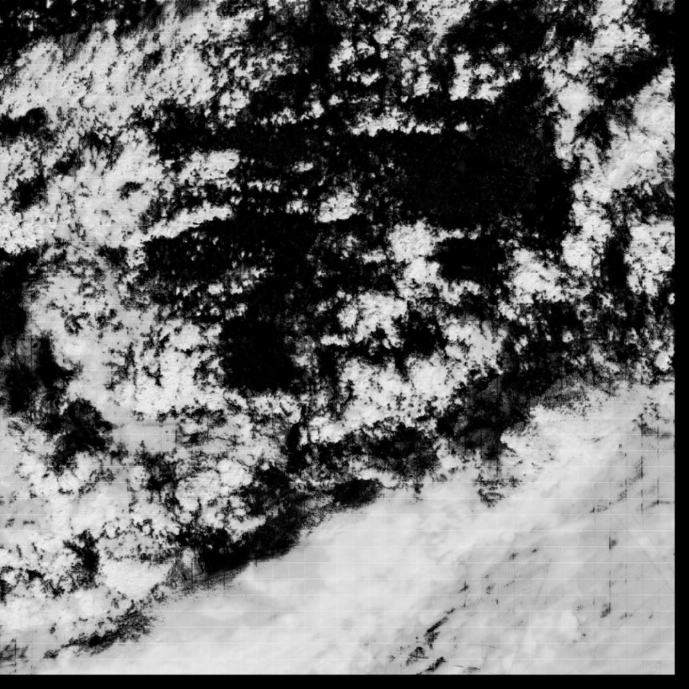
23 June 8.4% usable — overcast, with the tile grid faintly visible.
White is cloud probability near 1. Click any figure to enlarge.
Finding
On a genuinely clear day the residual signal is the city itself. Raise the gamma on 13 June and
the "clouds" left in the map draw Paris: the boulevards, the rail yards, La Défense, the airport
aprons. Bright impervious surfaces are radiometrically the closest thing to a small cloud that ground
can be, and a 384 px Landsat patch of farmland never taught the network otherwise.
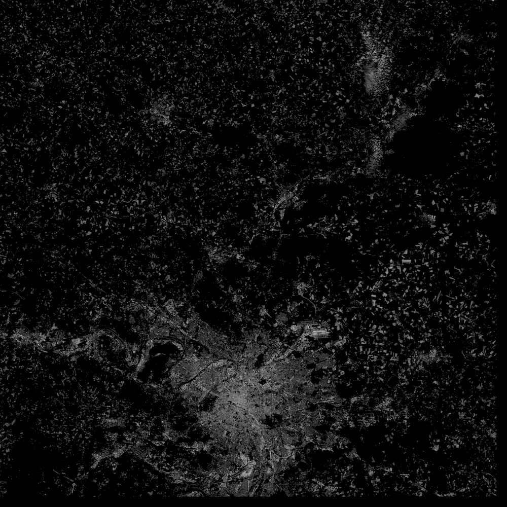
Fig. 9 13 June, γ 0.35. The false positives are a street map.
Artefact
On heavily clouded dates the 256 px tile grid shows through as faint seams (23 June, above).
Each tile is normalised and predicted independently, so a uniform overcast — where there is no
contrast anywhere in a tile — lets per-tile statistics leak into the output. It is invisible on clear
days and harmless after thresholding, but it is real and overlapped inference would remove it.
From probability to a usable/unusable decision
A threshold on the network output alone throws away too much and keeps too much at the same time.
What the compositor consumes is a stack of vetoes:
p ≥ 0.35 — the network's own call, deliberately below 0.5. Under-detection costs a permanent
cloud in the composite; over-detection only costs coverage, and coverage can be bought with another date.
Cirrus ≥ 0.008 — band B10 sees the high thin veil that is nearly invisible in
RGB+NIR and that the network, trained without it, cannot see either.
Objects < 100 px removed — isolated specks are speckle, not weather.
Dilate 100 px — a cloud's soft edge is unusable long before its core, and the network's
boundary is optimistic.
Shadows — pixels abnormally dark in NIR (below 0.7× the scene median) and within 300 px
of a cloud are its shadow. Shadows are not clouds and no network here was ever trained to find them.
…except water — which fits that description exactly, and was being deleted for it. Rivers
and lakes are spared by the water index (green − NIR)/(green + NIR): water is the one
dark surface that stays comparatively bright in green. Threshold 0.12, measured rather than taken
from a textbook — see below.
Measure, don't assume
The textbook water test is "NIR below ~0.05". Applied here it found zero water in a tile the
Seine runs straight through, and I nearly concluded there was none to protect. Sentinel-2 L1C is
top-of-atmosphere: scattering lifts every reading, and the Seine sits at 0.155 in NIR — dark
enough to trip the shadow test at 0.7× the scene median, nowhere near dark enough for the textbook
cutoff. Locating water by its actual signature instead — the darkest 0.1% of the scene in NIR — put
it at a water index of 0.14–0.26, against barely any built-up pixel above 0.12. Hence the threshold.
Finding — the cheapest band in the pipeline
B10 is a 2 MB file at 60 m and it does what the network cannot. At 1375 nm
water vapour absorbs everything on the way down and back, so the ground is invisible — whatever
the band reads is high cloud. Measured on 1 June: the network alone flags 3.4% of the scene,
the two together flag 54.5%, and on a clear date the band flags 0.000% of central Paris.
A detector with no urban false positives at all, precisely where the network has its worst ones.
Detail
B10's zero point moved between processing baselines — recent L1C adds a +1000 offset to
every band — so a hard-coded threshold silently means different things on different scenes. The
baseline is read off each scene instead: since the ground contributes nothing at that wavelength, the
darkest pixels are the zero. Self-calibrating, and one line shorter than a version table.
05
Mosaic — three attempts at the same month
June 2025, tile 31UDQ, 15 dates with all bands available. Same input every time; only the
selection rule changed.
Iteration 1 Select whole tiles
Keep a 256 px tile if fewer than n% of its pixels are cloudy; drop it otherwise. It works,
and it looks like a quilt. Two failures compound: a tile that is 90% clear is rejected for its
corner, so most of the month's good data is discarded; and neighbouring tiles come from dates with
different sun angles, so every boundary is a brightness step.
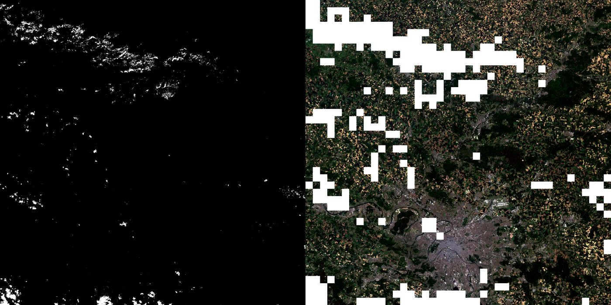
Fig. 10 The rule, made visible. Left: the predicted mask for one date — a few
thin streaks. Right: every tile that rule throws away. A handful of cloudy pixels evicts a whole
square kilometre of perfectly good ground.
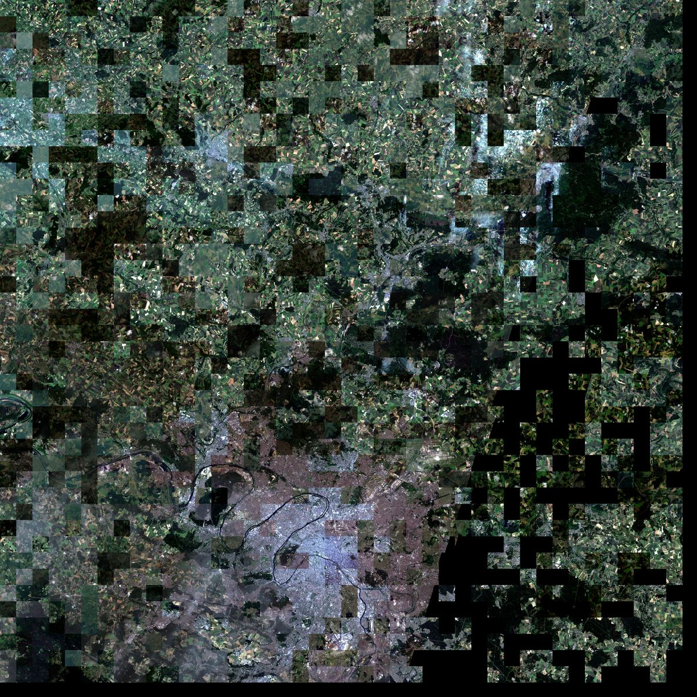
Fig. 11 A month composited that way. The grid is the algorithm, visible.
Radiometric inconsistency
The quilt above is not only a geometry problem. Two tiles that are adjacent on the ground can be
eight days apart in time: different sun elevation, different atmosphere, different aerosol load,
sometimes a different processing baseline. Each one is internally correct and none of them agree.
Stitch them and every boundary is a step in brightness and colour.
The first fix was the textbook one: match every date's histogram to a reference image, chosen
by hand for having the colours I wanted. It fails in a specific and instructive way — a histogram
describes a whole scene, so matching one imposes the reference's land cover, not just its
illumination. Use a forest scene as the reference for a coastal one and the water turns green. Then
mean-based normalisation: gentler, less destructive, and still blind to the fact that
neighbouring tiles are what must agree, not global averages.
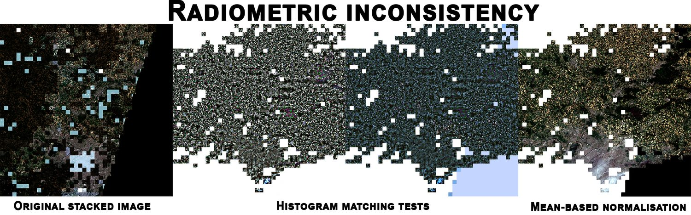
Fig. 12 The radiometry experiments. Raw stack, histogram matching against a
reference date, mean-based normalisation. Each one moves the average and none of them removes the seams.
Finding
Correcting each date toward an external reference is the wrong frame. What has to be
consistent is not a date against a photograph I liked, but every date against what is already in
the mosaic, measured on the pixels where the two actually overlap. That reframing — arrived at
only after both attempts above — is what iteration 3 implements, and it is the single change that
removed the seams for good.
Iteration 2 Select pixels
Drop the tile as the unit of decision and let every pixel take its own best date. The seams vanish
immediately — and the clouds stay.
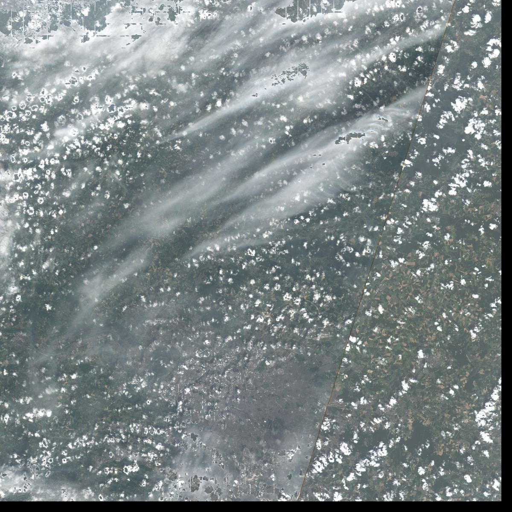
Fig. 13 Per-pixel selection, network threshold only. Seamless, and wrong.
Finding
What survives here is exactly what the network cannot see: thin cirrus streaks and the soft haloes
of cumulus. Both are below p = 0.35 almost everywhere. This is the image that
argued for the cirrus band and for dilation — not a metric.
Iteration 3 Select pixels, rank them by physics
A pixel is a candidate if it is cloud-free by the veto stack. Among candidates, the winner is the one
with the lowest contamination score:
score = ρblue + ρcirrus
Cloud, haze and veil all scatter hardest at short wavelengths, so a contaminated pixel reads brighter
in blue than the same ground does on a clear day. Adding cirrus reflectance covers what blue misses.
No learning involved, and it beats "first clear date wins" on every date after the sixth — the log
shows pixels being improved long after they were first filled.
The pixels that go into the mosaic are not the model's input. The network reads raw reflectance
divided by 65 535, exactly as it was trained; the visible composite is built separately. Two images,
one decision. At this stage the visible one was a 2nd–98th percentile stretch per channel
followed by a Gray World balance — a recipe that turns out to be the single most destructive thing in
the pipeline, for reasons that took iteration 4 to understand.
Radiometry is matched not to a fixed reference image but to the mosaic itself: each new date is
fitted with a gain and offset over the pixels where it overlaps what is already placed. That is why
the seams are gone rather than merely smaller — every date is rescaled into the same photometric frame
as its neighbours, by construction.
Fig. 14 Drag: tile-level selection (left) against the final per-pixel composite (right). Same tile, same 15 dates.
Iteration 4 The image was clean and still wrong
With the veto stack and the ranking in place, the composite had no cloud left in it — and looked
nothing like a photograph. It was dark, flat, and Paris was violet. Three separate causes, each
one a lesson about measuring statistics on the wrong pixels.
Cloud was setting the exposure
The stretch and the balance measured their percentiles over the whole scene, cloud included.
Cloud is brighter than any ground, so it owned the top of the range and pushed the landscape into the
dark half; being near-neutral, it also dragged the three channel means together, which is exactly what
a Gray World balance then locks in. The mask that decides which pixels are usable was already
computed — it simply was not being passed to the code that measures the image.
6 June, statistics measured over…
p98
Channel spread
the whole scene before
0.369
0.021
cloud-free pixels only after
0.948
0.050
Full tonal range restored and 2.4× the colour, from passing one mask into one function. On a clear
date the same change moves nothing — there was no cloud there to corrupt the measurement.
…and fixing that made it darker
Which was the second cause surfacing. Every date is fitted to the mosaic as it stands, so the
first date sets the photometric frame the whole month inherits. Processed in calendar order, the
month opened on 1 June: 6% usable, and a tiny overlap for the next date to fit against. Bad gains
estimated on unrepresentative samples, compounding date after date.
The fix is ordering, not arithmetic: process the clearest date first. Ranking them needs no
model — the 60 m cirrus band plus a decimated read of blue scores all 15 dates in
five seconds, and that is enough to sort them. Starting from a clear date gives every later fit
a large, representative overlap; the alignment stops drifting because there is nothing left to drift
from.
Why the city was violet
The last cause was the interesting one, and it is physics rather than a bug. Sentinel-2 L1C is
measured at the top of the atmosphere, so every band carries a haze contribution from
atmospheric scattering — strongest at short wavelengths. The raw data is genuinely blue-heavy:
ρblue 0.227 > ρgreen 0.214 > ρred 0.203
Normalising each channel to its own range does remove that cast — that is why it was there — but it
removes more than the cast. Colour lives in the ratios between bands, and per-channel normalisation
is the operation that flattens exactly those ratios. Vegetation came out with red and green equal
(olive, not green) and blue left proportionally high, so neutral grey roofs read violet. Gray World
finished the job by forcing the channel means equal, which on a scene three-quarters covered in
vegetation means multiplying blue up hard.
Because atmospheric scattering is additive, it comes out with a subtraction, not a rescale:
take each band's own dark value — at those wavelengths the darkest pixels hold no ground signal worth
speaking of, so what they read is atmosphere — then apply a single shared gain to all three
bands, and a gamma to lift vegetation out of the shadows it otherwise sits in.
ρ′ = ((ρ − p0.5(ρ)) / p98(ρ′)) 1/2.0
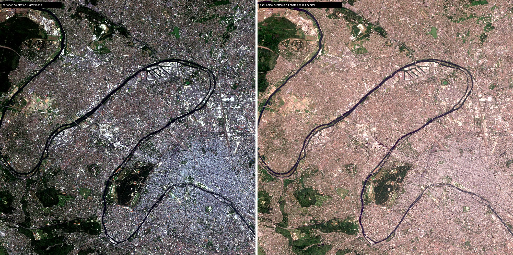
Fig. 15 Same pixels, 13 June. Left: per-channel stretch + Gray World — cold, violet,
vegetation drained to olive. Right: per-band dark-object subtraction + shared gain + γ 2.0 —
limestone reads warm grey, the parks read green, the Seine reads like water.
Finding
Every one of the three was a statistic measured over the wrong set of pixels: cloud included where
it should have been excluded, the worst date used as the anchor instead of the best, and each band
measured alone when it is only meaningful against the others. None of them was a modelling problem
and none would have shown up in a loss curve.
The same logic then applies to the inter-date fit: its gain and offset are shared across the three
channels. Fitting each channel separately would let it "correct" the differences that are real
colour, quietly re-introducing a cast and accumulating it down the chain — the per-band part of the
problem is already handled when each date is normalised on its own.
Iteration 5 Grading a series is not grading an image
Iteration 4 fixed the black point of every band. It left the other end untouched, and that shows
up as warmth: measured on the finished mosaic, concrete and roofs — surfaces that should be neutral
— came out 0.168 redder than blue. The blue that dark-object subtraction removes has to be
given back somewhere, and nothing was doing it.
The counterpart to a black point is a white point, so: find surfaces that ought to be neutral, and
apply the gains that make them so. My first attempt took the brightest pixels as that reference and
turned the whole month cyan.
Finding
Bright does not mean neutral. Over a tile that is three-quarters farmland, the brightest surfaces
are bare soil and harvested fields, measured at 0.34 of saturation — genuinely, correctly
warm. Forcing those to grey dumps that much blue over everything. The reference has to be bright
and already close to neutral, which is what concrete and roofs are and what a ploughed field
is not.
Then a second problem, invisible in any single image and obvious the moment twelve are played in
sequence: measured independently, each month's gains differ by up to 0.17. That reads as the
colour sliding around from frame to frame — grading drift dressed up as seasons. One set of gains,
the median across the months, is applied to all twelve instead. What moves between frames is then
the year, and only the year.
A month cannot grade itself
Which months get a vote matters too. On a heavily clouded month the bright, spectrally flat
surfaces are the clouds, so it measures its own weather and concludes nothing needs
correcting — September, October and November each returned gains of almost exactly 1.000. My first
filter tried to exclude them by coverage and failed: every month reports ~96% covered, because
pixels that were cloudy on every date are filled from their least bad observation rather than left
empty. The disqualifying signature is not low coverage, it is that suspiciously perfect 1.000.
How the month fills in
Dates are processed cleanest first, not in calendar order, so the horizontal axis below is a ranking
rather than a timeline. Each date contributes only what is still missing or still dirty.
Fig. 16 Bars: fraction of the scene that date could contribute. Line: cumulative coverage of the mosaic.
Finding
Two dates carry the month. 16 and 13 June alone take the mosaic to 92.9%; the thirteen
that follow are worth 2.4 points of coverage between them. But they are not wasted: 18 June adds
0.4% of new ground while improving 31.8% of the scene, and 11 June improves 23.7% while adding
0.1%. Coverage and quality saturate at completely different times, which is the argument against
stopping when the image is merely full.
It is also the argument for ranking the dates before spending anything on them. The four worst days
of the month contribute nothing at all — 0.0% new, 0.0% improved — and each one still costs a
450 MB download and three minutes of inference to discover that.
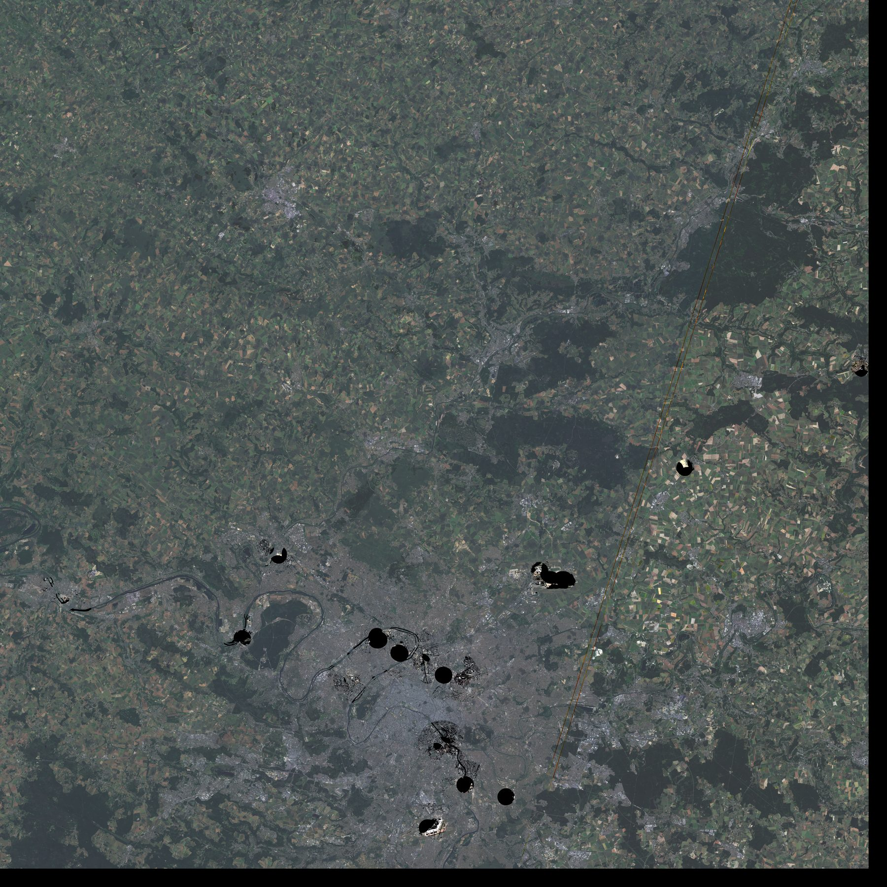
Fig. 17 June 2025, tile 31UDQ, 95.9% of the scene reconstructed from 15 passes.
06
Residuals — where it still fails
The remaining 4.7% is not random. Zoom in on Paris and the failure modes are geometric enough to name.
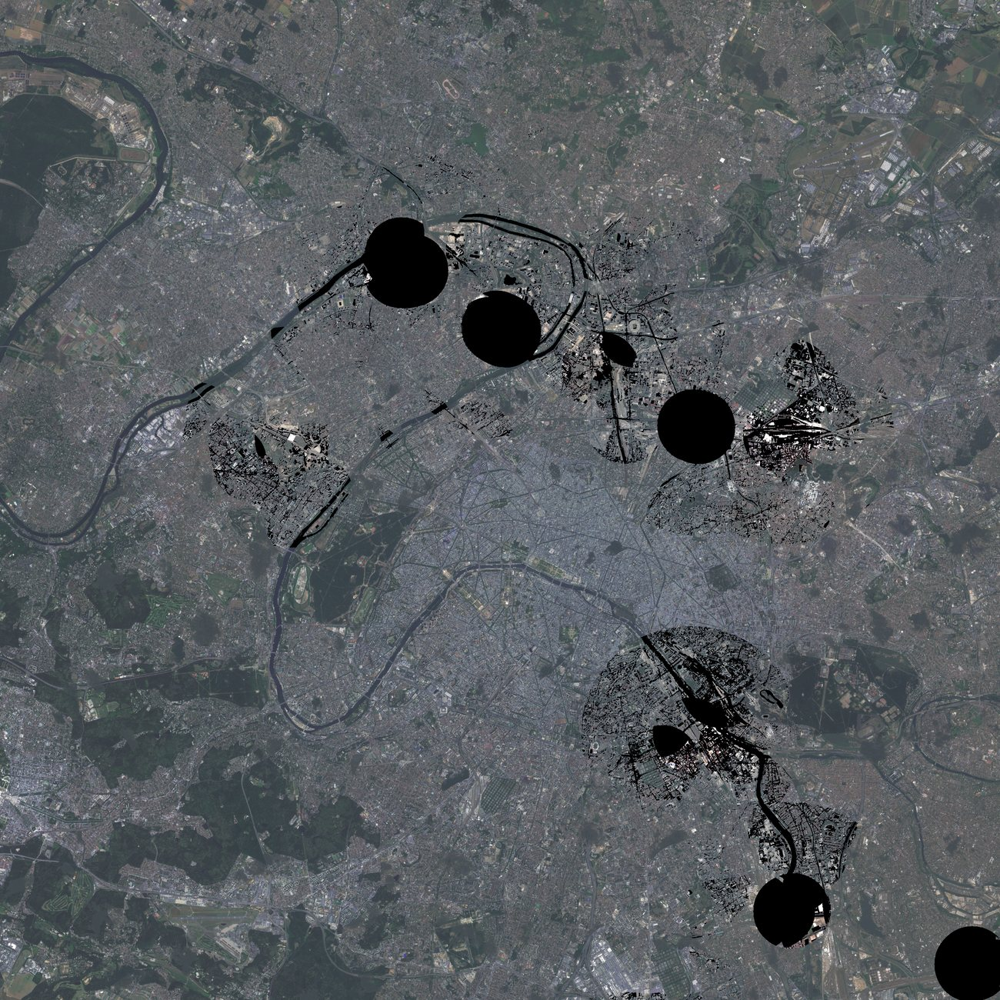
Fig. 18 Central Paris, 28 km across. Black is "never usable on any date".
Failure 1 — discs
Every hole is a perfect circle, ~1 km in radius. That is the 100 px dilation, applied to a
handful of pixels the network calls cloud on every single date — La Défense, the rail yards at
Bercy and Le Bourget, the airport aprons. A permanent false positive costs 3 km² of ground,
because the morphology has no way to tell a persistent detection from a weather event.
Failure 2 — water
The Seine is carved out along its whole length. Water is near-black in NIR, which is precisely the
shadow test: dark in NIR, close to a cloud. Rivers and lakes are structurally indistinguishable from
cloud shadow under that rule. A water index (NDWI) would separate them in one extra line.
Failure 3 — the orbit seam
A faint diagonal line crosses the full tile. It is the boundary between two adjacent Sentinel-2
orbits: pixels on either side were acquired on different passes with different view angles. Gain and
offset matching flattens the brightness step but not the angular difference in how vegetation
reflects. Correcting it properly means a BRDF model, not a linear fit.
There is also a fallback worth naming: pixels masked on every date are filled from their least
contaminated observation rather than left empty, on the argument that a permanent detection is almost
certainly a false one. The discs above are what remains when even that fallback has nothing to offer.
Fixed — the anchor and the colour
This section used to end with a fourth failure: a composite darker and flatter than any single clear
scene, and a city that came out violet. I called the fix "one-line changes", which was wrong twice
over. Masking the display statistics and anchoring on the clearest date were indeed one line each —
but the first, applied alone, made the image darker, because it exposed the drift the bad anchor
was causing. And neither addressed the colour at all, which was a per-channel normalisation quietly
destroying the band ratios that colour is made of. Iteration 4 is what it
actually took.
07
A year — twelve mosaics of the same ground
One mosaic per month for all of 2025, same tile, same pipeline, one shared grading. Downloading a
year of Sentinel-2 the obvious way is ~80 GB and nine hours of inference, for a result that
saturates after a handful of dates. So each month's dates are ranked before anything is pulled:
JPEG2000 keeps reduced-resolution copies inside the file, GDAL fetches those over HTTP range requests,
and a 120 MB band is judged in eight seconds. Only the four cleanest per month are downloaded —
21 GB and about three hours for the year.
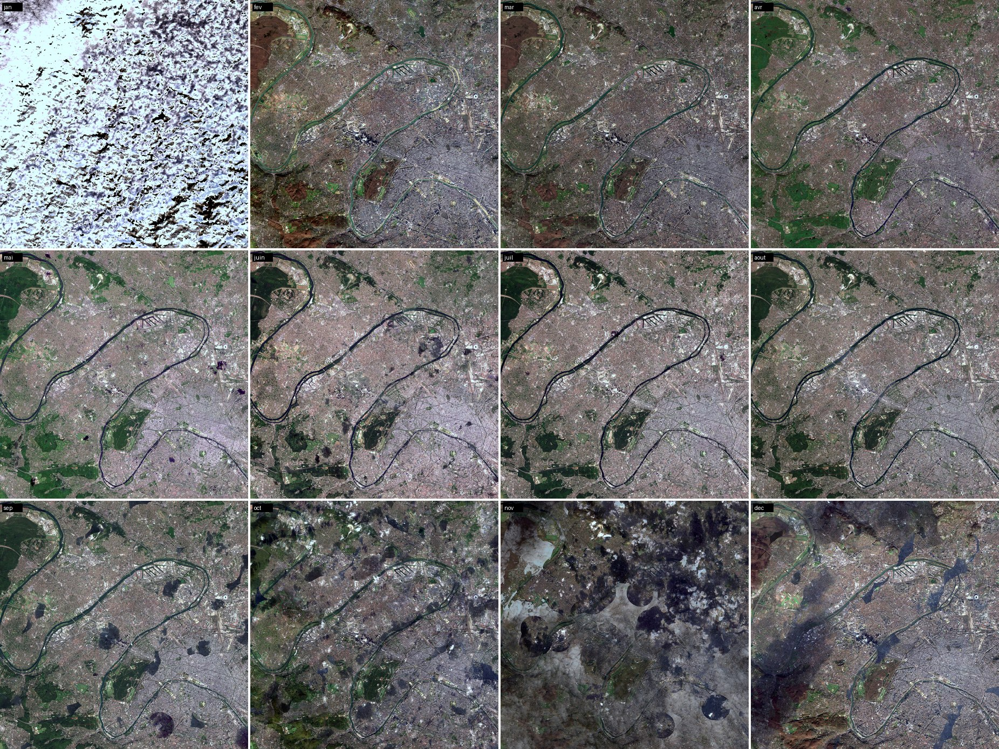
Fig. 19 Central Paris, month by month through 2025. Same grading throughout, so the
differences are seasonal: the parks greening from March, the fields harvested by August, the light
flattening into autumn. January and November are weather, not ground.
What the year actually recovered
Coverage here is real coverage — ground genuinely observed — not the alpha channel, which reads
~96% for every month because unusable pixels are filled from their least contaminated observation
rather than left empty. That fallback is worth about 1% on a good month. On a bad one it becomes the
picture.
Month
Real ground
Fallback
January
3.2%
92.7%
unusable
February
85.1%
10.8%
usable
March
93.6%
2.3%
good
April
95.0%
0.9%
good
May
94.9%
1.0%
good
June
95.3%
0.6%
good
July
95.0%
0.9%
good
August
94.3%
1.6%
good
September
74.1%
21.8%
degraded
October
77.4%
18.5%
degraded
November
60.7%
35.2%
unusable
December
89.0%
6.9%
usable
Finding
Ten months out of twelve. Six consecutive months from March to August land above 93%, and the
failures are the calendar rather than the method — January offered 3.2% of usable ground across
every date in the month. No amount of engineering recovers a tile that was never seen. What a
pipeline can be blamed for is not saying so: January renders as a full, plausible image that
is 93% cloud, and only the number above gives it away.
08
Next
Say when the answer is weather. A month with 3% real ground still renders as a full image.
The fallback that makes that happen is right at 1% of a scene and wrong at 93%; it should be bounded,
and the real coverage should travel with the image rather than live in a log.
Re-run the year with the water index. It is in the pipeline now, but the twelve mosaics
above predate it, so the Seine is still carved out of every one of them.
Persistent-detection memory. A pixel the network calls cloud on every date is a false
positive, not weather. Detecting that across dates would kill the 1 km discs at the source
instead of papering over them with a fallback.
Adaptive dilation. Scale the buffer with the size of the detected region, so a 200 px
blob does not erase 3 km².
Fine-tune on Sentinel-2. The network has never seen a European city at 10 m. The urban
false positives are a domain gap, not a capacity limit — and every workaround above is compensating
for it.
Overlapping inference. Half-tile stride with feathered blending removes the grid artefact
on overcast dates.
Colophon
Python, PyTorch, rasterio, NumPy, scikit-image, SciPy. Hexagonal layout — domain, application,
infrastructure — so the compositor never knows it is reading JPEG2000. Inference runs on CPU: about
three minutes per date, so under an hour for a full month of the Paris tile, and it checkpoints as it
goes — the mosaic is stored as RGBA, alpha marking which pixels are already settled, so a later run
only pays for the holes.
That checkpoint is also what made the grading tractable. It holds the composited result, so the white
point and the contrast can be changed and judged across all twelve months in a few minutes, instead of
the three hours it takes to rebuild them. Every grading decision on this page was made that way.
Figures on this page are downscaled. Full-resolution outputs are 10 980 px square and 200–280 MB each.